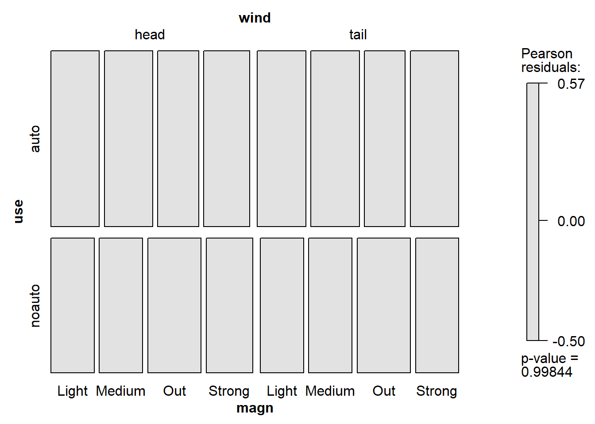
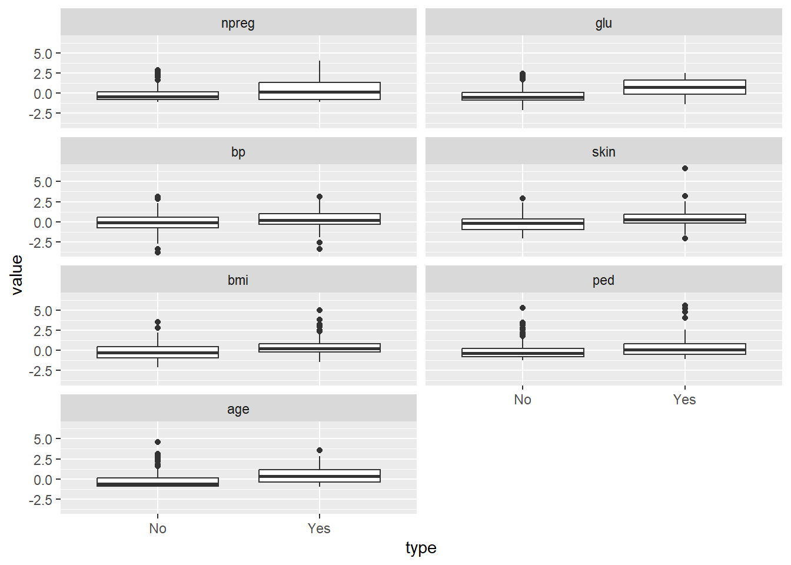
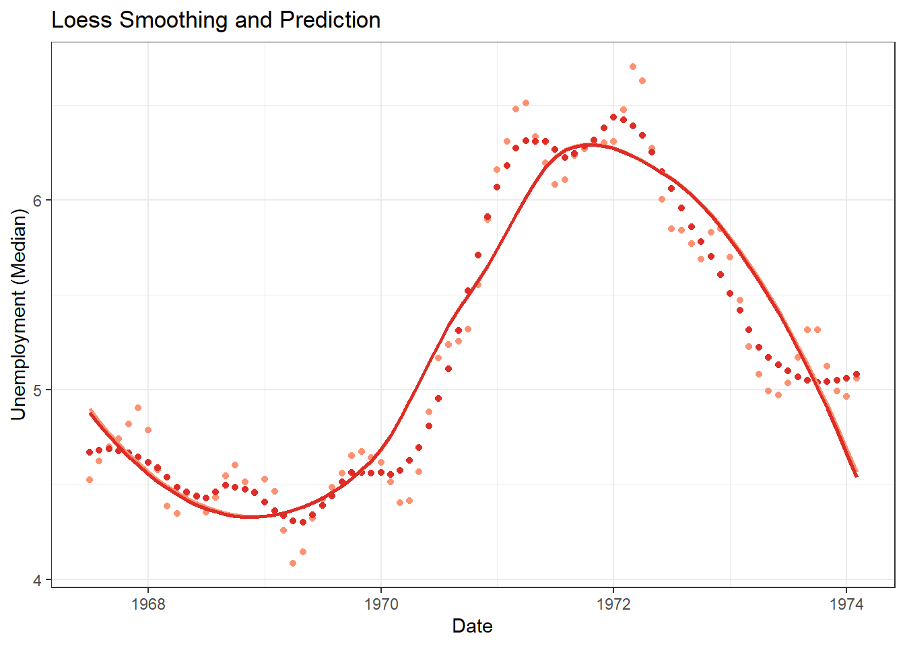

Chapter 2 Smoothing
2.1 Smoothing
Smoothing is a very powerful technique used all across data analysis. Other names given to this technique are curve fitting and low pass filtering. It is designed to detect trends in the presence of noisy data in cases in which the shape of the trend is unknown. The smoothing name comes from the fact that to accomplish this feat, we assume that the trend is smooth, as in a smooth surface. In contrast, the noise, or deviation from the trend, is unpredictably wobbly
平滑是一种非常强大的技术，用于所有数据分析。 该技术的其他名称是曲线拟合和低通滤波。 它旨在在趋势形状未知的情况下检测存在噪声数据的趋势。 平滑的名称来自于这样一个事实，即为了完成这一壮举，我们假设趋势是平滑的，就像在平滑的表面中一样。 相比之下，噪声或趋势偏差是不可预测的摇摆不定：
concepts behind smoothing techniques
because conditional expectations/probabilities can be thought of as trends of unknown shapes that we need to estimate in the presence of uncertainty.

2.1.1 Bin smoothing
The general idea of smoothing is to group data points into strata in which the value of \(f(x)\) can be assumed to be constant. We can make this assumption because we think \(f(x)\) changes slowly and, as a result, \(f(x)\) is almost constant in small windows of time.
平滑的一般思想是将数据点分组到层中，其中\(f(x)\)的值可以假设为常数。 我们可以做出这个假设是因为我们认为 \(f(x)\) 变化缓慢，因此 \(f(x)\) 在小时间窗口内几乎是恒定的。
span <- 7
fit <- with(polls_2008,
ksmooth(day, margin, kernel = "box", bandwidth = span))
polls_2008 %>% mutate(smooth = fit$y) %>%
ggplot(aes(day, margin)) +
geom_point(size = 3, alpha = .5, color = "grey") +
geom_line(aes(day, smooth), color="red")
2.1.2 Kernels
The final result from the bin smoother is quite wiggly. One reason for this is that each time the window moves, two points change. We can attenuate this somewhat by taking weighted averages that give the center point more weight than far away points, with the two points at the edges receiving very little weight.
bin smoother 的最终结果非常不稳定。 造成这种情况的一个原因是，每次窗口移动时，都会改变两个点。 我们可以通过采用加权平均值来稍微减弱这种情况，使中心点的权重比远处的点要大，边缘的两个点的权重很小。
You can think of the bin smoother approach as a weighted average: \[\hat{f}(x_0) = \sum_{i=1}^N w_0(x_i) Y_i\]
span <- 7
fit <- with(polls_2008,
ksmooth(day, margin, kernel = "normal", bandwidth = span))
polls_2008 %>% mutate(smooth = fit$y) %>%
ggplot(aes(day, margin)) +
geom_point(size = 3, alpha = .5, color = "grey") +
geom_line(aes(day, smooth), color="red")
2.1.3 Local weighted regression (loess)
刚刚描述的 bin 更平滑方法的一个限制是我们需要小窗口来保持近似恒定的假设。 结果，我们最终得到少量数据点来平均并获得不精确的估计. 在这里，我们描述了局部加权回归（loess）如何允许我们考虑更大的窗口大小。
There are three other differences between loess and the typical bin smoother.
- Rather than keeping the bin size the same, loess keeps the number of points used in the local fit the same. This number is controlled via the span argument, which expects a proportion. For example, if N is the number of data points and span=0.5, then for a given x, loess will use the 0.5 * N closest points to x for the fit.
loess 不是保持 bin 大小相同，而是保持局部拟合中使用的点数相同。 这个数字是通过 span 参数控制的，它需要一个比例。 例如，如果 N 是数据点的数量并且 span=0.5，那么对于给定的 x，loess 将使用 0.5 * N 最接近 x 的点进行拟合。
- When fitting a line locally, loess uses a weighted approach. Basically, instead of using least squares, we minimize a weighted version:
\[ \sum_{i=1}^{N} w_{0}\left(x_{i}\right)\left[Y_{i}-\left\{\beta_{0}+\beta_{1}\left(x_{i}-x_{0}\right)\right\}\right]^{2} \] However, instead of the Gaussian kernel, loess uses a function called the Tukey tri-weight: \[ W(u)=\left(1-|u|^{3}\right)^{3} \text { if }|u| \leq 1 \text { and } W(u)=0 \text { if }|u|>1 \] To define the weights, we denote \(2 h\) as the window size and define: \[ w_{0}\left(x_{i}\right)=W\left(\frac{x_{i}-x_{0}}{h}\right) \]
- loess has the option of fitting the local model robustly. An iterative algorithm is implemented in which, after fitting a model in one iteration, outliers are detected and down-weighted for the next iteration. To use this option, we use the argument family=“symmetric”.
total_days <- diff(range(polls_2008$day))
span <- 21/total_days
fit <- loess(margin ~ day, degree=1, span = span, data=polls_2008)
polls_2008 %>% mutate(smooth = fit$fitted) %>%
ggplot(aes(day, margin)) +
geom_point(size = 3, alpha = .5, color = "grey") +
geom_line(aes(day, smooth), color="red")
## set degree = 1. This tells loess to fit polynomials of degree 1, a fancy name for lines. If you read the help page for loess, you will see that the argument degree defaults to 2. By default, loess fits parabolas not lines.
total_days <- diff(range(polls_2008$day))
span <- 28/total_days
fit_1 <- loess(margin ~ day, degree=1, span = span, data=polls_2008)
fit_2 <- loess(margin ~ day, span = span, data=polls_2008)
polls_2008 %>% mutate(smooth_1 = fit_1$fitted, smooth_2 = fit_2$fitted) %>%
ggplot(aes(day, margin)) +
geom_point(size = 3, alpha = .5, color = "grey") +
geom_line(aes(day, smooth_1), color="red", lty = 2) +
geom_line(aes(day, smooth_2), color="orange", lty = 1) 
2.2 Loess Regression
The loess (locally estimated scatterplot smoothing) method evaluates f near each data point, and draws a piecewise polynomial curve connecting the fitted points on the scatter plot. In more than two dimensions, the loess regression method constructs a flat surface by fitting points. Locally Estimated Scatterplot Smoothing (LOESS) does not need to determine the number of parameters in advance. In each prediction, the sample points around the specified sample points are used for temporary training to determine the parameters.
loess（局部估计散点图平滑）方法在每个数据点附近评估 f，并在散点图上绘制连接拟合点的分段多项式曲线。在两个以上的维度上，黄土回归方法通过拟合点来构造一个平面。 Locally Estimated Scatterplot Smoothing (LOESS) 不需要预先确定参数的数量。在每次预测中，将指定样本点周围的样本点用于临时训练以确定参数。
By fitting a polynomial regression function in the local neighborhood of each point, the response function at the data point can be estimated. The radius of the neighborhood is determined by the predetermined proportion of the data points contained in these neighborhoods (called smoothing parameters). Polynomial regression (usually linear or quadratic) is fitted by the weighted least squares method, and the smaller the weight, the farther the point is from the center.
通过在每个点的局部邻域拟合多项式回归函数，可以估计数据点处的响应函数。邻域的半径由这些邻域中包含的数据点的预定比例决定（称为平滑参数）。多项式回归（通常是线性或二次）通过加权最小二乘法拟合，权重越小，点离中心越远。
First, specify the value of the smoothing parameter as \(\mathrm{p} / \mathrm{n}\). This means that for each fixed point \(\mathbf{x}^{0}=\left(x_{1}^{0}, \ldots, x_{k}^{0}\right),\), linear function Fitting through the \(p\) points in the local neighborhood \(\mathscr{N}_{p}\left(\mathbf{x}^{0}\right)\). The linear function is defined as
\[ l(\mathbf{x})=l\left(x_{1}, \ldots, x_{k}\right)=\beta_{0}+\beta_{1}\left(x_{1}-x_{1}^{0}\right)+\cdots+\beta_{k}\left(x_{k}-x_{k}^{0}\right) \] for every \(\mathbf{x}=\left(x_{1}, \ldots, x_{k}\right)\) in \(\mathscr{N}_{p}\left(\mathbf{x}^{0}\right)\) The weighted least-squares predicted line \(\hat{l}(\mathbf{x})=\hat{\beta}_{0}+\hat{\beta}_{1}\left(x_{1}-x_{1}^{0}\right)+\cdots+\hat{\beta}_{k}\left(x_{k}-x_{k}^{0}\right)\) minimizes \[ \sum_{\mathbf{x}_{i} \in \mathscr{N}_{p}\left(\mathbf{x}^{0}\right)}\left[y_{i}-l\left(\mathbf{x}_{i}\right)\right]^{2} w\left(\frac{\left\|\mathbf{x}_{i}-\mathbf{x}^{0}\right\|}{r\left(\mathbf{x}^{0}\right)}\right) \] where \(\mathbf{x}_{i}=\left(x_{1 i}, \ldots, x_{k i}\right), i=1, \ldots, p .\) Here \(\left\|\mathbf{x}_{i}-\mathbf{x}^{0}\right\|\) denotes the Euclidean distance, that is, \[\left\|\mathbf{x}_{i}-\mathbf{x}^{0}\right\|=\sqrt{\left(x_{1 i}-x_{1}^{0}\right)^{2}+\cdots+\left(x_{k i}-x_{k}^{0}\right)^{2}}\] \(r\left(\mathbf{x}^{0}\right)=\max _{\mathbf{x}_{i} \in \mathscr{N}_{p}\left(\mathbf{x}^{0}\right)}\left\|\mathbf{x}_{i}-\mathbf{x}^{0}\right\|\) is the radius of the neighborhood, and \(w(\cdot)\) is the weight function.
Finally, by predicting the corresponding value on the line \(\hat{l}\), that is, \(\hat{f}\left(\mathbf{x}^{0}\right)=\hat{l}\left(\mathbf {x}^{0}\right)=\hat{\beta}_{0}. \$\), estimate the response function \(f\) at the point \(\mathbf{x}^{0}\). Please note that only the value of the matching intercept will work. Once the loess estimation of the response function for each data point is completed, the loess curve can be drawn on the scatter plot by connecting the fitted points with the straight line. If a significant curve relationship is displayed on the scatter plot, then the quadratic function
\[ q\left(x_{1}, \ldots, x_{k}\right)=\beta_{0}+\beta_{1,1}\left(x_{1}-x_{1}^{0}\right)+\beta_{1,2}\left(x_{1}-x_{1}^{0}\right)^{2}+\cdots+\beta_{k, 1}\left(x_{k}-x_{k}^{0}\right)+\beta_{k, 2}\left(x_{k}-x_{k}^{0}\right)^{2} \] Instead of the linear function \(l\). The loess regression method proposes different weight functions. The most commonly used is
- the bisquare function \[ w(\mathbf{x})=\left\{\begin{array}{ll} \left(1-\|\mathbf{x}\|^{2}\right)^{2}, & \text { if }\|\mathbf{x}\| \leq 1 \\ 0, & \text { otherwise } \end{array}\right. \]
- and the tricube function \[ w(\mathbf{x})=\left\{\begin{array}{ll} \left(1-\|\mathbf{x}\|^{3}\right)^{3}, & \text { if }\|\mathbf{x}\| \leq 1 \\ 0, & \text { otherwise } \end{array}\right. \] In both cases \(\|\mathbf{x}\|\) denotes the Euclidean norm of \(\mathbf{x}=\left(x_{1}, \ldots, x_{k}\right),\|\mathbf{x}\|=\sqrt{x_{1}^{2}+\cdots+x_{k}^{2}}\)
Comparison
Using linear regression will cause underfitting. In this case, Loess can solve this problem well. Compared with linear regression: -The goal of linear regression is to minimize \(\sum\left(y^{(i)}-\theta^{T} x^{(i)}\right)^{2}\) -Loess’s goal is to minimize \(\left(y^{(i)}-\theta^{T} x^{(i)}\right)^{2}\), where \(\quad \omega^{( i)}=\exp \left(-\frac{\left(x^{(i)}-x\right)^{2}}{2 \iota^{2}}\right)\)
The function of \(\omega\) is to make the neighboring points of the predicted point contribute a lot in minimizing the objective function:
-\(\left|x^{(i)}-x\right|\) small \(\Rightarrow \omega^{(i)} \approx 1\) -\(\left|x^{(i)}-x\right|\) large \(\Rightarrow \omega^{(i)} \approx 0\)
Disadvantages:
Can not solve the problems of under-fitting and over-fitting, when the amount of data is large, it is costly to fit each predicted data once.
Smoothing Parameter Selection Criterion
Many criteria have been proposed to select the best smoothing parameter for a set of data. Here, the most commonly used is the bias corrected Akaike information criterion (AICC). The criterion is to choose a smoothing parameter that minimizes AICC.
\[A I C C=\ln \hat{\sigma}^{2}+\frac{2(\operatorname{Trace}(\mathbb{L})+1)}{n-\operatorname{Trace}(\mathbb{L})-2}\]
where \(\hat{\sigma}^{2}\) is an estimate of the variance of random error \(\varepsilon\). The matrix \(\mathbb{L}\) is an \(n \times n\) smoothing matrix that satisfies \(\mathbf{y}=\mathbb{L} \hat{\mathbf{y}}\) where \(\mathbf{y}\) is the vector of observed \(y\)-values, and \(\hat{\mathbf{y}}\) is the vector of the corresponding predicted values. he trace of a matrix is defined as the sum of the elements on the main diagonal.
data unempl_rates;
input rate @@;
month= _N_ ;
datalines;
6.0 6.7 4.9 4.4 5.8 4.8 5.5 6.7 4.7 5.6 6.5 6.0
4.7 5.1 7.2 6.1 7.7 5.7 7.1 4.2 5.8 5.1 6.3 5.1
3.9 4.7 4.4 5.9 4.1 5.8 4.9 5.4 3.9 6.0 4.1 4.6
5.7 5.0 4.5 6.9 5.6 4.6 4.4 4.1 3.2 6.3 4.2 4.7
4.3 4.3 4.5 6.7 3.9 4.6 5.8 3.8 5.5 4.7 5.0 4.2
5.0 4.5 3.7 5.5 5.4 2.6 5.0 4.9 5.7 4.3 5.3 7.1
7.5 4.1 5.1 5.7 4.8 6.1 6.3 4.1 5.7 7.2 6.0 7.2
8.0 8.7 8.5 9.1 7.5 10.5 8.5 7.4 10.5 8.9 8.5 9.9
8.3 9.9 7.2 9.5 10.5 11.9 11.4 8.0 10.5 11.2 9.2 9.5
10.0 10.3 9.1 8.1 7.9 9.5 10.7 8.5 9.1 8.7 9.0 8.6
;
proc loess data=unempl_rates;
model rate=month/clm;
ods output OutputStatistics=results;
run;
proc print data=results;
run;
symbol1 color=black value=dot;
symbol2 color=black value=none interpol=join line=1;
symbol3 color=black value=none interpol=join line=2;
symbol4 color=black value=none interpol=join line=2;
proc gplot data=results;
by SmoothingParameter;
plot (DepVar Pred LowerCL UpperCL)*month/ overlay;
run;Compare the smoothing parameters
proc loess data=unempl_rates;
model rate=month/ clm smooth=0.05 0.08 0.1 0.12;
ods output OutputStatistics=results;
run;
proc gplot data=results;
by SmoothingParameter;
plot (DepVar Pred LowerCL UpperCL)*month/ overlay name=’graph’;
run;
proc greplay igout=work.gseg tc=sashelp.templt template=l2r2 nofs;
treplay 1:graph 2:graph2 3:graph1 4:graph3;
run;R implementation
library(tidyverse)
data(economics, package="ggplot2") # load data
economics$index <- 1:nrow(economics) # create index variable
economics <- economics[1:80, ] # retail 80rows for better graphical understanding
loessMod10 <- loess(uempmed ~ index, data=economics, span=0.10) # 10% smoothing span
loessMod25 <- loess(uempmed ~ index, data=economics, span=0.25) # 25% smoothing span
loessMod50 <- loess(uempmed ~ index, data=economics, span=0.50) # 50% smoothing span
### Predict Loess
### get smoothed output
economics$smoothed10 <- predict(loessMod10)
economics$smoothed25 <- predict(loessMod25)
economics$smoothed50 <- predict(loessMod50)
## plot(economics$uempmed, x=economics$date, type="l", main="Loess Smoothing and Prediction", xlab="Date", ylab="Unemployment (Median)")
ggplot(data = economics) +
geom_point(mapping = aes(x = date, y = smoothed10), color="#fc9272") +
geom_point(mapping = aes(x = date, y = smoothed25), color="#de2d26") +
geom_smooth(mapping = aes(x = date, y = smoothed10), color="#fc9272", fill=NA) +
geom_smooth(mapping = aes(x = date, y = smoothed25), color="#de2d26", fill=NA) +
theme_bw()+
labs(y="Unemployment (Median)",
x="Date",
title="Loess Smoothing and Prediction")